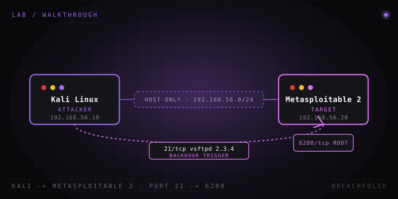

Metasploitable 2 walkthrough: a step-by-step exploitation lab.
Discover it, enumerate it, exploit a real backdoor, and get root – entirely on your own isolated network. No CTF flag, just the actual mechanics.
Every offensive-security curriculum eventually points you at the same box: Metasploitable 2. It's a deliberately broken Ubuntu 8.04 server, published by Rapid7 for exactly one purpose – to be discovered, enumerated, and exploited by people learning how real vulnerabilities actually work. This walkthrough takes you through one complete, real exploitation path against it: not a CTF flag hunt, but the actual mechanics an attacker follows against a genuinely vulnerable service. By the end you'll have a root shell, an understanding of why the vulnerability exists, and two more leads to chase on your own.
1. Before you start
You need two virtual machines on the same isolated virtual network: a Kali Linux VM to attack from, and a Metasploitable 2 VM to attack. If you don't already have a Metasploitable 2 VM or don't know what it is and why it exists, read What is Metasploitable 2 first: it covers the box's history and design in more depth than we will here. If you don't yet have the surrounding lab environment (hypervisor, host-only network, Kali appliance), Build a home lab on one laptop walks through that setup in about 20 minutes.
Both VMs must sit on the same host-only or internal NAT network – commonly 192.168.56.0/24 if you followed the VirtualBox defaults – with no bridged adapter and no route out to your home network or the internet. This is not a suggestion. Metasploitable 2 is intentionally riddled with remote-code-execution vulnerabilities and at least one deliberate root backdoor; on an open network it would be compromised by automated scanners within minutes. Confirm isolation before you do anything else: from Kali, you should be able to reach the target's IP, and you should not be able to reach your router or the public internet.
Nothing in this walkthrough targets anyone else's infrastructure. Every command below is run against a machine you own, on a network you control, that was built and published specifically to be attacked this way. That distinction – authorised, isolated, self-owned – is what separates a lab exercise from a crime.
2. Step 1 – Find the target on the network
Before you can attack anything, you need its IP address. If you assigned a static IP during setup you already know it, but it's worth practising discovery anyway, because on a real engagement you rarely start with a known address. From Kali, sweep the subnet:
$ nmap -sn 192.168.56.0/24-sn tells nmap to skip port scanning and just perform host discovery: a ping-style sweep across every address in the range. On a lab network this small, the output is short: your Kali box, your Metasploitable 2 box, and possibly a gateway address if your hypervisor injects one. Look for a line like:
Nmap scan report for 192.168.56.20
Host is up (0.00042s latency).
MAC Address: 08:00:27:XX:XX:XX (Oracle VirtualBox virtual NIC)The MAC address vendor prefix is a useful tell in a VirtualBox lab – every VM's virtual NIC reports as an Oracle/VirtualBox device, so it won't help you distinguish Kali from Metasploitable by itself. What will help is process of elimination: you already know your own Kali IP, so whatever else responds on the subnet is your target. Note that IP down – you'll use it in every command from here on.
3. Step 2 – Enumerate open services
Now that you have an address, find out what's running on it. A full-port service-and-version scan is slower than a default nmap run but far more informative, and on a single lab host the time cost is trivial:
$ nmap -sV -p- 192.168.56.20-p- scans all 65,535 TCP ports instead of nmap's default top-1000, and -sV probes each open port to identify the service and version banner. Expect a long list – Metasploitable 2 is deliberately configured with dozens of listening services. A handful are worth stopping on, because each one represents a distinct, well-documented attack surface:
| Port | Service | Why it stands out |
|---|---|---|
| 21 | vsftpd 2.3.4 | A specific build of this FTP daemon contains a maliciously inserted backdoor – the subject of this walkthrough. |
| 139 / 445 | Samba | An old Samba build vulnerable to a remote command-injection flaw via the "username map script" option. |
| 3632 | distccd | A distributed-compilation daemon that, left unauthenticated and internet-facing, will run arbitrary commands it's handed – a classic misconfiguration RCE. |
| 1099 | Java RMI registry | An exposed Java RMI registry can be abused to load and execute an attacker-supplied class remotely. |
| 6667 | UnrealIRCd | This exact IRC daemon build shipped, at one point, with a backdoored download – functionally similar in spirit to the vsftpd incident, on a different service. |
| 8180 | Apache Tomcat | Runs with default/weak manager credentials, letting an attacker deploy a malicious WAR file for remote code execution. |
To an attacker doing recon, this list is a menu. Each row is a service, a version, and (with five minutes of searching) a known vulnerability class. Reading version banners and matching them to public advisories is most of what "enumeration" means in practice – it's unglamorous, and it's the step that actually finds the way in. We're going to walk through the first one, because it's the cleanest, best-documented, and most reliable entry point on this box.

4. Step 3 – Exploit the vsftpd 2.3.4 backdoor
- Launch Metasploit's console on Kali:
$ msfconsole - Search for and load the matching module, point it at the target, and run it:
msf6 > use exploit/unix/ftp/vsftpd_234_backdoor msf6 exploit(unix/ftp/vsftpd_234_backdoor) > set RHOSTS 192.168.56.20 msf6 exploit(unix/ftp/vsftpd_234_backdoor) > run
If the target and network are configured correctly, this returns a command shell running as root on the Metasploitable 2 box – no credentials, no password guessing, no chained exploits. One module, one target, one shell.
It's worth understanding why this works, because the mechanism is unusual and instructive. This is not a classic buffer overflow or logic flaw in the vsftpd code itself. In 2011, the official vsftpd 2.3.4 source tarball hosted on its distribution site was maliciously replaced by an unauthorized third party with a modified version containing a backdoor: any FTP login attempt using a username containing a smiley face (:)) in a specific pattern causes the backdoored binary to open a command shell on TCP port 6200, bound and waiting for a connection, no valid credentials required. The vsftpd maintainer discovered the tampering and pulled the compromised file within days, but Metasploitable 2 deliberately ships that exact compromised build, because it's such a clean, well-documented illustration of a supply-chain compromise: the vulnerability isn't in flawed code logic, it's in a trusted distribution channel being silently subverted. The Metasploit module simply automates sending that trigger string and connecting to the resulting shell on port 6200.
This is also why the port-21 finding from Step 2 mattered more than the others at a glance: a backdoor triggered by an authentication attempt is a fundamentally different, and often far more reliable, class of bug than a service crash or a misconfiguration. It doesn't depend on race conditions, memory layout, or ASLR – it's a deterministic trapdoor left by whoever tampered with the source.
5. Step 4 – Confirm what you actually have
Once your shell lands, verify what you've actually got before doing anything else:
$ whoami
$ idroot
uid=0(root) gid=0(root)Landing directly at uid=0 from a single exploit, with no separate privilege-escalation step, is unusually generous – and it's worth being explicit about that, because it can set the wrong expectation if this is your first exploitation lab. On a real engagement, initial access almost never arrives as root. You typically land as a low-privileged service account (a web server user, an FTP daemon user, a database service account) and privilege escalation – kernel exploits, misconfigured sudo rules, writable cron jobs, credential reuse – is its own separate phase, often the harder half of the exercise. Metasploitable 2's vsftpd backdoor happens to run the injected shell as root because of how the daemon itself was privileged when it was tampered with; that's a property of this specific backdoor, not something to expect elsewhere.
6. Step 5 – Try a second path
The vsftpd backdoor is the cleanest entry point on this box, but it's not the only one, and part of the value of Metasploitable 2 is that it hands you several independent ways in to compare. Two are worth practising next, without walking through them in full here so this lab stays focused:
| Path | Port | Metasploit module | Root cause |
|---|---|---|---|
| UnrealIRCd backdoor | 6667 | exploit/unix/irc/unreal_ircd_3281_backdoor | A specific, historically real build of the UnrealIRCd daemon was distributed with a backdoor allowing arbitrary command execution triggered over the IRC protocol itself – conceptually a close cousin of the vsftpd backdoor you just used. Enumerate the service first, then look at what triggers the backdoor before reaching for the module. |
| distcc remote code execution | 3632 | exploit/unix/misc/distcc_exec | A completely different vulnerability class: distcc is a legitimate distributed-compilation tool that, left listening without authentication, will execute any compilation command it's handed, which an attacker can abuse to run arbitrary shell commands instead. Unlike vsftpd, this is a misconfiguration/design flaw, not a tampered binary, a good contrast case for understanding that "vulnerable service" covers more than one root cause. |
Working both of these after this walkthrough gives you three distinct mental models for the same box: a supply-chain backdoor, a protocol-triggered backdoor, and an authentication-free RCE in a legitimate tool. That range is exactly why this box is still assigned in training programs years after its release.
7. Cleanup
Before you close the lab session, revert the Metasploitable 2 VM to a clean snapshot. You've just planted a root shell and, depending on what you did inside it, possibly left files, stopped services, or otherwise modified state. Snapshots make this free – restore to clean-base (or whatever you named it) and the box is exactly as broken, and exactly as ready for next time, as the day you built it.
And to say it one more time, plainly: this target VM must never touch a real network. It has a working root backdoor and multiple unauthenticated remote-code-execution paths by design. Keep it on the isolated host-only or internal network for its entire lifetime, and don't be tempted to port-forward it "just to test something quickly." That single decision is the difference between a training exercise and an incident.
Frequently asked questions
Is it legal to exploit Metasploitable 2?
Can I use these exact techniques against other systems?
Do I need Metasploit specifically?
What should I do after finishing this lab?
What is the vsftpd 2.3.4 backdoor exploited in this walkthrough?
What other vulnerable services does Metasploitable 2 expose besides vsftpd?
Why did this exploit land a root shell instead of a low-privileged one?
Daniel A. and Óscar S. run Breachfolio, a small independent site about security and AI. This article was drafted with AI assistance and reviewed by a person before it went live. We write from documentation, vendor sources and published research rather than from original lab benchmarks, and we link a source in the sentence that relies on it. How we work · About us